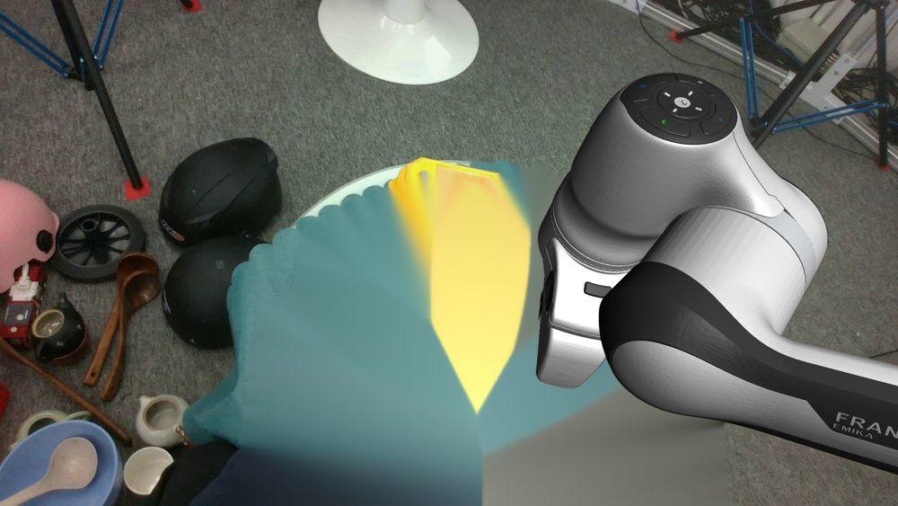
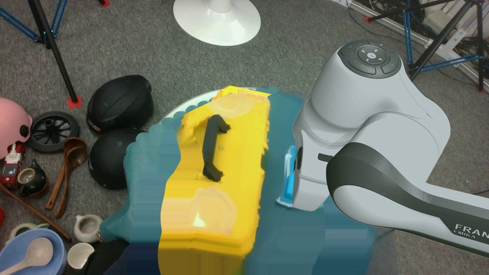

Point it at a first-person video of a person using their hands. It returns a video of a robot doing the same task in the same scene, the executable joint trajectory behind that video, and a policy-ready dataset. A single contact-consistent 4D trace drives both outputs, and a digital twin checks every clip by running it.
Every clip is a real output of the engine: the person is removed, a robot is composited into their scene, and the arm you see is rendered at the forward kinematics of the trajectory that was executed and verified in a twin. Tap any clip to enlarge.
Every arm here is rendered rather than generated, so the robot in the video is exactly the robot the shipped trajectory commands. The next sections show how one trace produces both the picture and the actions.
Robot learning is starved of one thing: observation-action data. Humans generate that data all day, in first person, for free. The gap is that a video shows a hand, while a policy needs a robot, a trajectory, and a guarantee that the trajectory runs.
We take a monocular egocentric clip, with zero paired human-to-robot supervision, and produce three coupled artifacts. The hard constraint is the one people usually skip: the contact semantics of the produced trajectory must match the contact semantics of the video. The person grasps the tool at frame 40; the robot grasps the tool at frame 40, at the same place on the tool.
Perception gives you hands, masks, depth and camera motion. Then the pipeline splits in two: one branch paints a robot into the scene, the other branch retargets the hand onto a gripper. Once they split, three failures follow, and each one is invisible in the final mp4.
The rendered arm is posed by one solver; the trajectory is produced by another. The pretty video and the shipped actions describe two different robots, and a policy trained on the pair learns the difference between them.
A kinematic copy of the wrist places the gripper near the object. Near is enough to look right and fails to grasp: the fingers close on air, the object stays put, while the reward function reports a smooth track.
Quality control is usually a forward heuristic: a filter that inspects the perception outputs and drops suspicious clips. A filter can rank clips. Only execution can tell you whether the trajectory would have worked.
If the video and the trajectory disagree, which one is the training data?
The honest answer decides the architecture. We refuse to let the two branches hold separate beliefs. They read from one object, and that object is built around the one physical event that both of them must respect.
Three anchoring choices are available to any such engine. The choice is testable, and it is the scientific question this project asks.
A human wrist pose is meaningless on a Franka flange; a fingertip pressing the handle of a brush is meaningful on any embodiment. Contact points, contact onset and grasp type are observable in the video and portable across robots, so contact is what an intermediate representation should carry. Inspired by the retargeting tradition, which copies kinematics, and by the grasp literature, which copies affordance: we keep the event, and let the kinematics follow.
Render the robot at the forward kinematics of the executed trajectory, then project the executed end effector back into the image and measure its distance to the rendered robot mask. Agreement is a number between 0 and 1, computed per frame, with no annotation. Cycle consistency turns the visual branch into a detector for action-branch bugs. It found a diverging control segment for us before any human noticed.
Scoring yields a failure dimension, and a failure dimension maps to a repair action: relax the grasp orientation, re-place the base, spend more sampling budget, re-run the trace with looser contact thresholds. Rerun only the affected stage, rescore, and keep the attempt that improves the verdict. Quality control graduates from a filter into a repairer, and yield becomes something you engineer.
What if the quality gate were the training signal for the pipeline itself?
Three inspirations shaped the machinery. Model-predictive control in simulation, for turning a noisy reference into an executable one. Evolution strategies, for optimizing a reward that has contact switches and early termination inside it, where gradients disappear. Curation with conditioning, for keeping an imperfect clip and telling the policy how much to trust it, via a quality token in the observation.
A contact-consistent 4D hand-object canonical trace serves as the single source of truth for visual robotization and action retargeting alike, and a closed-loop quality gate verifies each clip by executing it and repairs the ones that fail.
| Axis | Common practice | Ours |
|---|---|---|
| Intermediate representation | Per-branch outputs, consumed independently | One canonical 4D trace with contact events as first-class fields |
| Anchoring of the grasp | Kinematic copy of the wrist, or the object pose alone | Contact points from the video, with a pre-grasp ramp |
| Pixel-action agreement | Assumed | Measured per frame: FK-to-pixel cycle consistency |
| Quality control | Forward heuristic filter, clips get dropped | Execution-verified scoring plus a repair feedback loop |
| Embodiment | One robot per engine | One trace, many robots: parallel jaw and dexterous hand |
| Photorealism | Generative refinement of the rendered frame | Deterministic rendering upgrades that keep geometry exact |
The engine also changes how such data should be judged, and each proposal came from a failure we caught.
Per-frame agreement between the trajectory and the rendered pixels. A dataset that reports it is a dataset whose video and actions are the same robot.
Report the fraction of clips that survive a rollout in the twin, before and after repair. Yield becomes comparable across engines.
Score endpoint success only on rollouts where the object actually moved. It closes the do-nothing degeneracy, where a frozen policy is credited with success on low-displacement episodes.
The iron rule: the robot in the video is rendered from the executed trajectory. Update the trajectory, re-render. This makes pixel-action consistency structural rather than aspirational.
A three-rung refinement ladder ending in a state-conditioned residual policy, optimized by evolution strategies against a binary success reward whose tightness is a separate knob.
Repair beats rejection. A clip that fails carries its diagnosis, and the engine spends compute where the diagnosis points.
Click any stage to open it. The two branches read from the same trace, and they meet again inside the quality gate.
Every frame carries the camera pose, twenty-one hand keypoints with a wrist frame, the object point cloud and its pose, and a contact record: the contact points in world coordinates, their normals, and which hand parts produced them. Episode level contact events are rebuilt from the per-frame states. Because the camera trajectory is explicit and the frame is anchored to the workbench, the trace is independent of the capture device and the viewpoint.
Contact state comes from three pieces of evidence, combined with hysteresis so that a grasp holds once it starts.
Eight phases are derived from the dominant contact state and the object displacement, and they give every downstream stage a shared timeline.
Thresholds enter and exit at different distances, so a contact that has begun survives a frame of noisy depth. Confidence is a soft margin on each piece of evidence, and it propagates into the quality score.
Both arms of the study share one solver, one robot, one scene. They differ in one flag. The kinematic arm sends the gripper to the wrist pose and closes it by the human aperture. The contact-anchored arm ramps the target toward the contact points eight frames before the grasp begins, aligns the jaw axis with the thumb-to-index direction, and locks the gripper closed for the duration of the grasp event.
On grasp frames the two arms request end effector targets that differ by 0.116 to 0.136 m. Outside the grasp interval they agree to machine precision. That is a clean single-variable ablation, and the gap is bit-identical across two different robots, which proves the anchor is generated in the canonical frame and carried by the trace rather than by the embodiment.
Servo the reference joint positions in a MuJoCo twin rebuilt from the same scene. Cheap, and it exposes references that physics rejects.
Twenty-frame receding horizon. If the replayed chunk already tracks the object, commit it for free. Otherwise sample in joint space with time-correlated noise and score tracking, contact, smoothness. The reference is always candidate zero, so a chunk is chosen only when it improves.
A small state-conditioned network adds a bounded residual to the reference action. It is trained by evolution strategies against a binary success reward, because contact switches and early termination make the twin reward non-differentiable. A tightness knob separates the reward boundary from the simulator boundary, and that knob is what lets the residual overtake the sampler.
The robot is composited into the real scene by rendering the twin twice and taking the difference. Both passes share the camera, the lighting and the scene; the only change between them is whether the robot geometry is visible. Background pixels are therefore bit-identical, and the robot mask is exact, including self-occlusion behind real objects.
Render the scene with the robot hidden. This is the background reference.
Render again with the robot visible. Any pixel that changed belongs to the robot.
Feather the mask by one and a half pixels and alpha-blend onto the inpainted plate. Sub-pixel edges, zero hallucination.
Fidelity upgrades in the high-fidelity pass are all deterministic: two times supersampling, soft shadows, studio key lighting, a temporal median background plate recovered from unoccluded frames, and a color harmonization step that matches the robot to the ring of real pixels around it.


| Fréchet distance to real ego frames | Baseline | High fidelity |
|---|---|---|
| ResNet-18 features | 171.1 | 143.9 |
| VGG-16 features | 40.6 | 28.9 |
| DINOv2-large features | 344.3 | 299.7 |
Lower is closer to real footage. Three encoders agree, over 27 packages and 6 900 frames. This is a within-engine comparison against our own baseline composite, and it is reported as such.
Six dimensions, three of them measured by executing the trajectory in the twin. The verdict conditions the export rather than deleting the clip: a marginal clip ships with a quality token that the policy reads as an input.
The loop caught four real failures in our own experiments before they could contaminate a conclusion, including a control divergence that the visual branch located for the action branch. A data engine that audits itself is part of the contribution.
Packages export as frame-level entries: robotized video reference, executed joint state, next-state action, language instruction, and the quality token. A 28 M parameter flow-matching visuomotor policy consumes them: a ResNet stem gives sixteen visual tokens, proprioception gives one, quality gives one, a two-layer transformer fuses them, and a rectified flow head emits a twenty-step action chunk in ten Euler steps.
Evaluation closes the loop. The policy drives the same twin from which the data came, observing composited frames in the pixel domain it was trained on, and success is scored on relative object displacement. The pre-registered primary metric is the interaction-gated success rate, and episodes are held out whole, so no frame of a training episode appears in validation.
Reported with the tension intact: contact-anchored data trains policies that engage the object more often, and engagement is distinct from endpoint success. Significance needs roughly twenty-five paired episodes, and data access is the reason we have four.
Open a milestone to see what it had to prove before the next one was allowed to start.
Recovering three-dimensional hands from arbitrary kitchen footage depends on a parametric hand model whose license requires registration. Without it, contact events collapse to zero on the wild channel and confidence falls to 0.10.
Two ground-truth channels bypass the block. One dataset publishes hand parameters whose wrist is exact by construction, with fingers reconstructed by an anatomical template that lands fingertips within eleven millimetres of the object surface. A second dataset ships twenty-one measured keypoints outright. Degradation is reported rather than concealed, and the wild channel waits.
Four separate attempts to grow the episode pool failed at the transport layer, and the proxy degraded for every external endpoint on the same day. The confirmatory experiment is underpowered because of bandwidth.
Fail fast rather than hammer, retry at off-peak with jitter, mirror episode by episode, and pivot to a second dataset that is reachable. A pilot run marked explicitly as non-confirmatory proceeds in parallel so that the harness is ready the moment data arrives.
Endpoint success with a five-centimetre threshold credits a frozen policy on episodes whose object barely moves. The weaker arm looked stronger, purely through stillness.
Detect the degeneracy by matching the modal displacement across cells against the ground-truth displacement. Then gate the metric on interaction, require selected episodes to move at least twice the threshold, and log per-rollout contact events. The primary metric was re-registered before the numbers were read.
Refining rendered frames with a video diffusion model trades photorealism against geometric drift, and the guard we built proved there is no sweet spot without a real-robot appearance prior. Fidelity moved backwards.
The geometric guard survives as a reusable gate for any future generator. The fidelity path switched to deterministic rendering upgrades, which moved the render measurably closer to real footage while leaving the geometry exact. The negative result is published.
On stir episodes only eighteen to twenty-six percent of grasp frames show a true finger-object contact in the twin. Grip force is the wrong lever: tripling it lifted the brush set and left stir near zero, which points at the grasp pose and at the hardware.
Two paths run in order. First, contact-anchored grasp pose synthesis on the jaw. Second, a dexterous hand driven by the same trace, with every fingertip anchored to its own contact point. The second path also delivers the cross-embodiment breadth that the single contribution predicts.
On the perceived-object channel, roughly a quarter of episodes produce identical contact-anchored and kinematic trajectories, which means the contact was missed. Those episodes carry zero signal for the ablation, and they are a mechanistic cause of the underpowered result.
Treat identical arms as a contamination gate and reject the episode from the study rather than count it. Improve object segmentation and depth back-projection, and prefer the ground-truth channel for the confirmatory test.
Four simulator renderers on one device deadlock the graphics context, and a whole evaluation night is lost to a pathological grind.
One renderer per device, rollouts isolated in subprocesses, per-episode fail-fast, and a node blocklist. Forty rollouts out of forty now survive.
Every new episode tempts a re-test, and re-testing until the number pleases you is how a project fools itself.
The re-analysis gate is declared in advance: the test stays sealed until the pool reaches twenty-five balanced pairs. The pool reached seven of the required eight valid episodes, and the test stayed sealed.
One episode resisted four escalating repair attempts and was marked unrepairable. The ceiling is the fidelity of the twin geometry rather than the control budget.
Mark it unrepairable, restore the baseline, and say so. The next lever is reconstructed object meshes in the twin, and the diagnosis is already recorded against that milestone.
The claim: anchoring on contact rather than on kinematics propagates all the way to how a trained policy touches objects. Each level uses the same episodes and a different measurement.
| Level | Measurement | Contact-anchored | Kinematic |
|---|---|---|---|
| Data, after replay | Contact feasibility in the twin | 3 of 4 episodes above zero | 4 of 4 at zero |
| Data, after refinement | Contact feasibility in the twin | 0.18 to 0.39 | 0 to 0.09 |
| Data, across embodiments | Sixteen cells, episode by robot | wins 8 of 8 | contact vanishes in half |
| Policy | Interaction rate over rollouts | 0.532 | 0.425 |
The end effector target gap between the two arms is bit-identical across two different robots, which is mechanistic proof that the anchor is generated in the canonical frame and travels with the trace.
Contact-anchored data trains policies that engage objects more often, and on raw endpoint success the kinematic arm currently scores higher on the wider pool. Engagement is distinct from task success: a policy that reaches the object can overshoot it. The primary metric remains the interaction-gated success rate, the result remains directional and underpowered, and an earlier stronger estimate that came from partial coverage was withdrawn.
Confidence in a data engine comes from the failures it publishes.
The pre-registered primary metric needs roughly twenty-five paired episodes. We have four valid ones, and the pool grows as fast as the network allows.
A rasterizer has a ceiling. Passing it means learning a render-to-real mapping, which requires footage from a real robot camera.
The field reports distance to real robot observations. Public human-video datasets contain none, so that protocol stays out of reach until such observations are available.
All three unlock with the same key: observations recorded on a real robot.
Two levers are ours alone and move now. The dexterous hand removes the hardware ceiling on tool tasks and completes the cross-embodiment story: one trace, a parallel jaw, and a sixteen degree-of-freedom hand, with contact anchoring preserved on each. Contact-anchored grasp pose synthesis attacks the same ceiling from the algorithm side. The third anchoring arm, object pose, completes the scientific ablation the project set out to run.